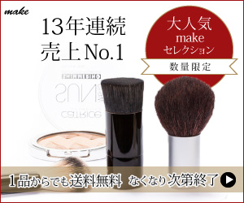
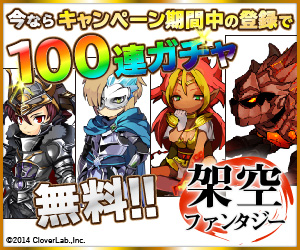

コーディング
カンプデザインをもとににしたコーディング対応が可能です。
HTML /
CSS（ネスト記法含む）を用いた実装を中心に、jQuery・JavaScriptによる簡易的な動作実装や修正対応、PHPを用いたWordpressコーディング経験があります。
Sourcetreeを使用したGit管理経験があり、AIツールを活用した実装効率化にも取り組んでいます。

ABOUT ME
Web制作・更新運用に9年間携わり、コーディングを中心に多数のWebサイト制作・運用を経験してきました。
後任者にも分かりやすいコード設計を意識し、公開前の文章確認や表示チェック、既存内容との差異確認など、品質面も意識した制作を心掛けています。
近年はAI関連ツールにも興味を持ち、業務効率化や制作への活用を学んでいます。
カンプデザインをもとににしたコーディング対応が可能です。
HTML /
CSS（ネスト記法含む）を用いた実装を中心に、jQuery・JavaScriptによる簡易的な動作実装や修正対応、PHPを用いたWordpressコーディング経験があります。
Sourcetreeを使用したGit管理経験があり、AIツールを活用した実装効率化にも取り組んでいます。
Wordpressでは、記事作成・更新・テンプレート修正などの実務経験があります。
はてなCMSでは新規テンプレート作成やデザインの改修などに携わってきました。
バナーやサムネイル、既存画像の修正対応が可能です。
AIツールを活用したアイデア出しや制作効率化にも取り組んでいます。
制作現場で使用されるスケジュール管理ツール、オフィスツール、コミュニケーションツールなどを用いた業務経験があります。
※業務を兼任しているものある為、経験年数に関しては被っている期間があります。

企画 / 情報設計 / デザイン / コーディング
当ポートフォリオサイトです。
以前使用していたポートフォリオサイトのサーバー終了に伴い、GitHub
Pagesにて再構築しました。
デザイン設計やコーディングの一部にAIツールを活用しつつ、セマンティック構造とアクセシビリティを意識して制作しています。
配色やUI調整は自身で行い、柔らかい印象のデザインに仕上げました。
使用画像は既存素材に加え、AIを活用してイメージ制作したものも使用しています。

企画 / 情報設計 / デザイン / コーディング
実在する店舗をモデルに、クライアントからの依頼を想定して制作をしました。
要件整理からワイヤーフレーム作成、デザイン、コーディングまで、一連の制作工程を意識して制作しています。
主要情報はトップページ内で把握できる構成にし、メニューは別ページに分けることで「価格」や「サイズ」を見やすく整理しました。
タピオカドリンクのポップな印象を表現するため、タイトルやロゴにはフリーフォントを使用。 ロゴにはGIFアニメを取り入れ、ストローが動く遊び心を入れました。


Illustrator / Photoshop
フォントに游明朝を使用し女性らしさの表現。ワンポイントに高級感を感じる赤色とゴールドの色味を付けました。

Illustrator / Photoshop
豊富なキャラクターがいるゲームだと知ってもらう為、いくつかのキャラクターを配置。 特別なキャンペーンの訴求性を高める為に「100連ガチャ」のフォントを大きく目立たせ、グラデーションを掛けたレインボーで目立つようにしました。 目玉の「100連ガチャ」の文字には特別感を出す為にキラキラした装飾を使用。